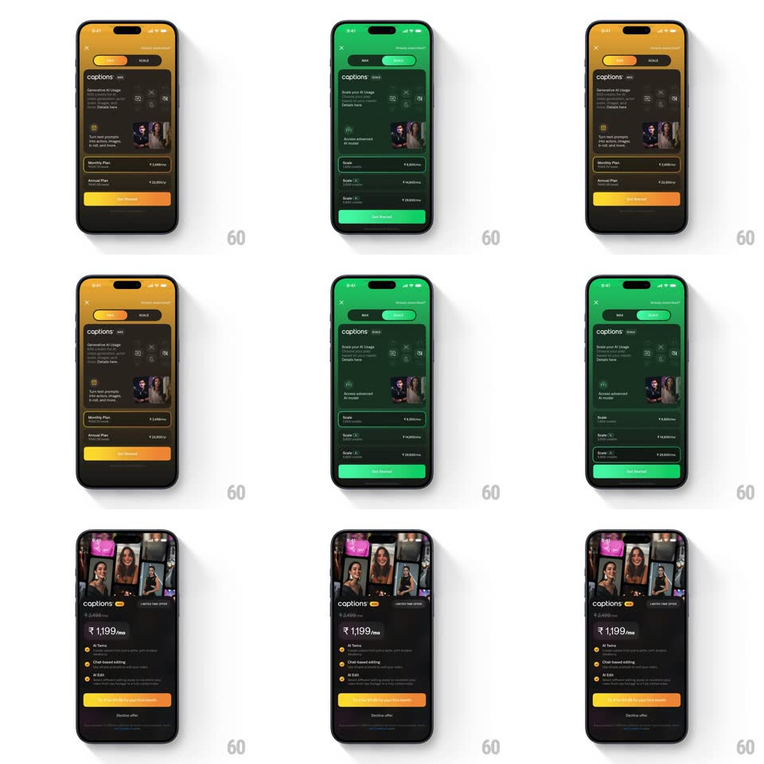

Media
Frame-by-frame

Rebuild this interaction 1:1: Captions' pricing theme switch - toggling between the MAX and SCALE tabs sweeps the entire screen from amber to green, plans and all.

Rebuild this interaction 1:1: Captions' pricing theme switch - toggling between the MAX and SCALE tabs sweeps the entire screen from amber to green, plans and all. ## Integration Integration: stack-agnostic spec - springs given as stiffness/damping, timed motions as duration + curve; map every value to your framework and animation library of choice. ## Scene Captions pricing screen, dark: a segmented MAX | SCALE control at top, the "captions MAX" header with feature rows and a creator photo, plan cards (Monthly Plan, Annual Plan with ₹ prices), and a full-width Get Started button. The whole screen is tinted by the active tab's theme: amber for MAX, green for SCALE. A detail page shows a creator-photo strip, "₹1,199/mo" with the struck ₹2,699, feature checklist (AI Twins, Chat-based editing, AI Edit), and the trial button. ## Motion spec Pattern: full-UI theme transition on pricing tab toggle. - Tapping the other tab slides the segmented pill (spring ~380/20, ~250ms) and the entire screen re-themes in one coordinated 400ms sweep: background tint, header accent, feature icons, plan-card borders, and the Get Started fill all cross-fade hue together (amber -> green) - top to bottom with a 60ms vertical cascade so the color appears to pour down the screen. - Plan names and prices crossfade to the new tier's values in the same window (250ms), with the Get Started label updating last. - The creator photo in the header swaps with a 200ms crossfade - no slide. - Selecting a plan pushes to the detail page (standard slide, 300ms) which inherits the tab's theme: its checklist checks, price, and trial button all wear the same accent. ## Calibration - Every accent on screen belongs to the theme - nothing stays amber when SCALE is active (audit the status bar tint and dividers too). - The transition is a hue cascade, not a full-screen flash - content never blanks. ## Reduced motion Theme crossfades uniformly (300ms) without the cascade; prices change without stagger. ## Don't miss - The struck-through original price sits right above the big ₹1,199/mo on the detail page - the deal framing is part of the design. - The segmented control's pill is the theme color itself - it previews the hue it selects.